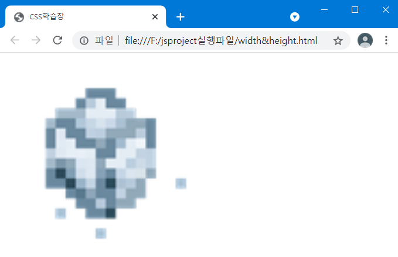
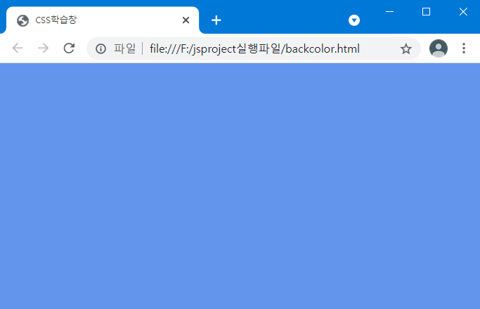
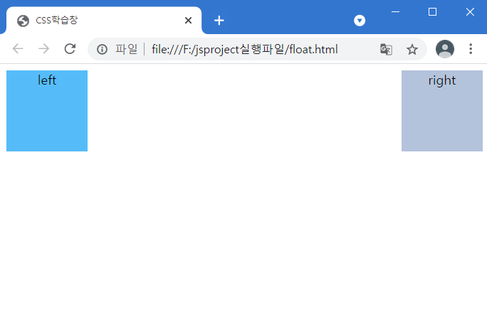
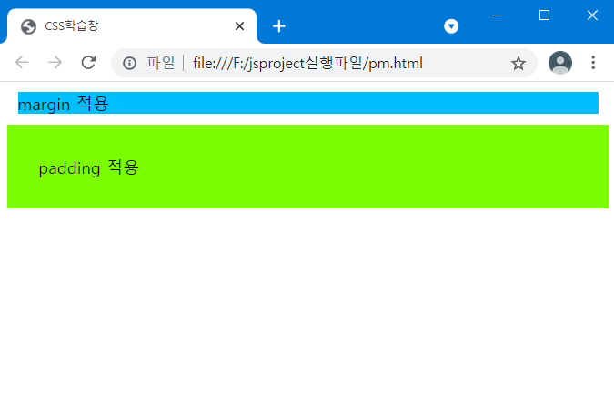

width
가로 길이 속성. 값은 숫자 뒤 px등의 단위를 붙여 정의한다. inline요소는 적용되지 않는다.
height
세로 길이 속성. 값은 숫자 뒤 px등의 단위를 붙여 정의한다. inline요소는 적용되지 않는다.
<!DOCTYPE html>
<html>
<head>
<meta charset="utf-8">
<title>CSS학습창</title>
</head>
<body>
<img src="img/ice.png" width="300px" height="0.5%">
</body>
</html>

background-color
배경색, 투명도 지정하는 태그
background-color: 키워드 값;
16진수 값;
RGB 값;
HSL 값;
<!DOCTYPE html>
<html>
<head>
<meta charset="utf-8">
<title>CSS학습창</title>
</head>
<body style="background-color: cornflowerblue;"></body>
</html>

float
특정 요소를 떠다니게 하여, 요소의 모서리가 페이지의 왼쪽, 오른쪽으로 이동하는 것(묶음태그에만 적용 가능)
float: left;
right;
none; (기본값)
<!DOCTYPE html>
<html>
<head>
<meta charset="utf-8">
<title>CSS학습창</title>
<style>
.left {
text-align: center;
background-color: deepskyblue;
width: 100px;
height: 100px;
float: left;
}
.rght {
text-align: center;
background-color: deepskyblue;
width: 100px;
height: 100px;
float: right;
}
</style>
</head>
<body>
<div class="left">
left
</div>
<div class="right">
right
</div>
</body>
</html>

margin => border를 기준으로 외부 영역에 생기는 여백
padding => border를 기준으로 내부 영역에 생기는 여백
box-model => content - padding - border - margin 순으로 존재(안쪽부터)
<!DOCTYPE html>
<html>
<head>
<meta charset="utf-8">
<title>CSS학습창</title>
<style>
.margin {
margin: 10px;
background-color: deepskyblue;
}
.padding {
padding: 30px;
background-color: lawngreen;
}
</style>
</head>
<body>
<div class="margin">margin 적용</div>
<div class="padding">padding 적용</div>
</body>
</html>
 HOME
HOME
 회원가입
회원가입
 HTML학습
HTML학습
 CSS학습
CSS학습